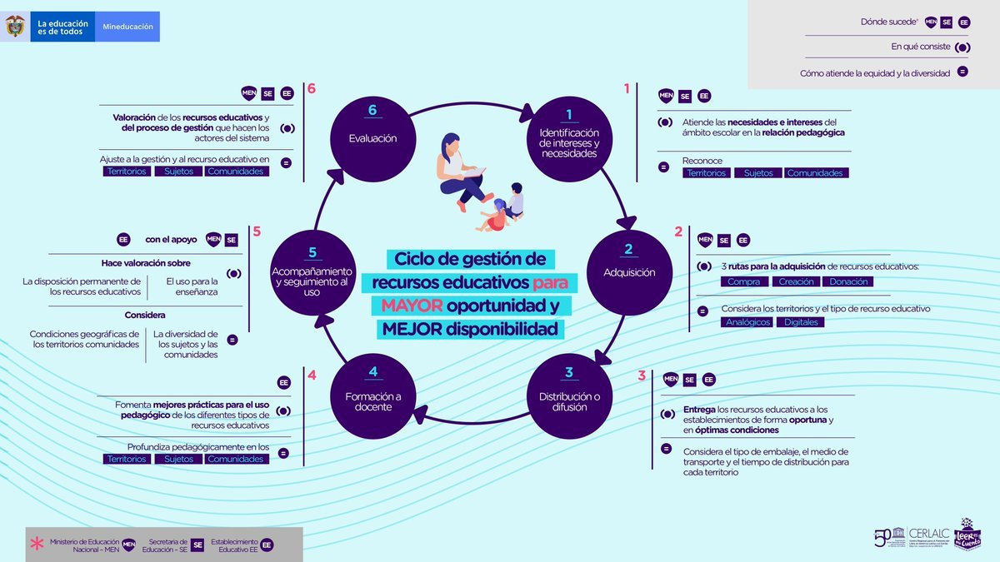
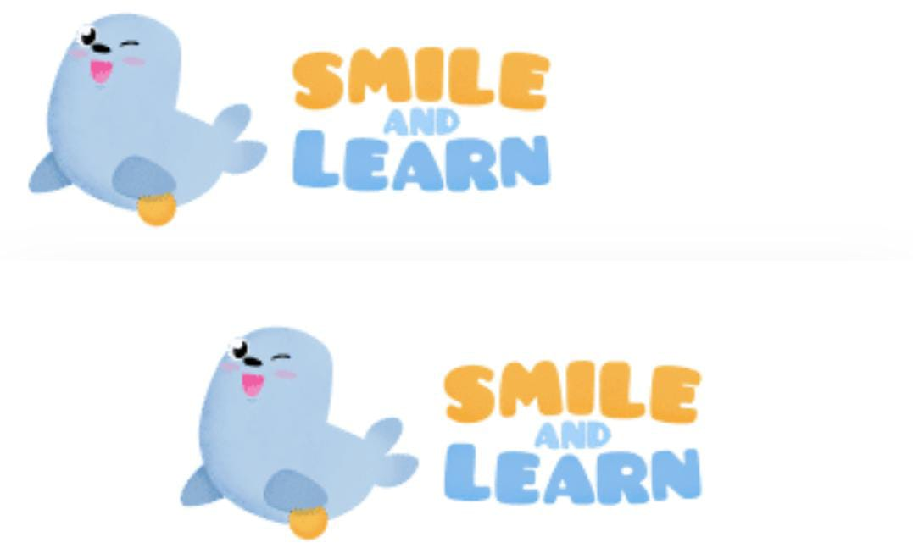

¿QUE ES LA POLITICA EDUCATIVA?
La historia de las políticas educativas abarca el desarrollo de decisiones y enfoques que han moldeado los sistemas educativos a lo largo del tiempo. Desde la antigüedad hasta la era moderna, ha reflejado cambios sociales, políticos y económicos. Movimientos de reforma, avances tecnológicos y contextos geopolíticos han influenciado las políticas educativas. Cada país tiene su propia historia única en este aspecto.
- Acceso a la educación.
- Calidad educativa.
- Educación Tecnica y Tecnológica.
- Inclusión Educativa.
- Tecnología en la educación.
¿EN QUE SE ENFOCAN?
Acceso y Equidad
Garantizar el acceso a la educación de calidad para todos los colombianos, incluyendo a comunidades rurales y poblaciones vulnerables, con el fin de reducir las brechas educativas y promover la equidad en el sistema educativo.
Calidad Educativa
Existe un enfoque en mejorar la calidad de la educación a través de la formación docente, el desarrollo curricular, la implementación de estándares educativos y la evaluación continua para asegurar que los estudiantes reciban una educación integral y actualizada.
Pertinencia y Conectividad
Buscan promover la pertinencia de la educación con las demandas del mercado laboral, así como mejorar la conectividad y el acceso a recursos tecnológicos en las instituciones educativas para fomentar el aprendizaje digital y el desarrollo de habilidades tecnológicas.
ENLACES
RECURSOS DIGITALES Y APPS DE AYUDA.

Smile and Learn
Bienvenid@ a este nuevo artículo centrado en los principales recursos educativos digitales para usar en el aula. Los objetivos principales son encontrar herramientas de calidad, útiles, fáciles de usar e intuitivas.
Kialo Education
El sitio de debate y mapeo de argumentos más grande del mundo, diseñado específicamente para uso en el aula. Su formato claro y visualmente atractivo facilita el seguimiento de la estructura lógica de una discusión y facilita una colaboración reflexiva. La misión de Kialo es promover debates bien razonados en línea y, con ese fin, Kialo es de uso gratuito para los educadores.
Novadas-Universidad central
Dirección de investigación y transferencia de conocimiento. Politicas educativas-publicas y su impacto en la sociedad.